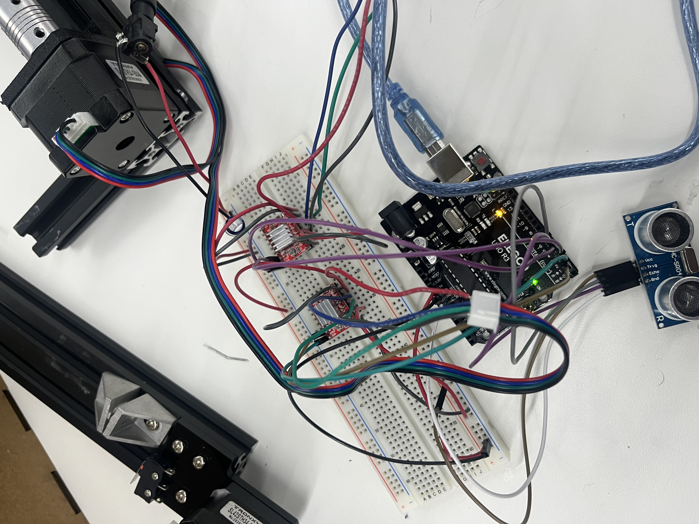

<div class="textcontainer">
<p class="margin"> </p>
<h3>Week 1: Final Project Proposal</h3>
<p class="margin"> </p>
<div class="flexrow">
<a id="btn" href="wk7.zip" download>Download my files from this week!
</a>
</div>
<p class="margin"> </p>
<h4>Assignment: Minimum Viable Product for Final Project</h4>
In my mind, by far the most challenging part of this project will be the coding. I can’t code and I hate doing it. So for my MVP I thought I’d try to write some code that would control two stepper motors and an ultrasonic sensor at once. Specifically I wanted the code to control the stepper motors such that the y axis motor would move a small increment and then the x motor would sweep across the entire axis (then the process would repeat), as well as having the code record where it thought it’s position was at all times, storing values from the ultrasonic sensor at every step of the way. This proved to be… challenging.
The less challenging part was the circuitry. I just followed the A4988 wiring and attached two stepper motors in a series to my arduino on a breadboard. Then I plugged the ultrasonic sensor directly into the arduino. At this point, assuming I can get this code to do what I want, I have my final project, just without the body it lives in.
<p class="margin"> </p>
<div class="flexrow">

</div>
<p class="caption">It just doesn't have a body...</p>
<pre><code style="background-color: #2d2b33;">
#include <AccelStepper.h>
// Define the number of steps per revolution for each motor
#define STEPS_PER_REV 200
// Define the pins connected to the stepper motor drivers
#define X_STEP_PIN 2
#define X_DIR_PIN 3
#define Y_STEP_PIN 5
#define Y_DIR_PIN 6
// Define the distance to move along each axis for one sweep
#define X_SWEEP_DISTANCE 100 // Adjust as needed
#define Y_SWEEP_DISTANCE 1 // Adjust as needed
// Define initial position
#define INITIAL_X_POS 0
#define INITIAL_Y_POS 0
// Define ultrasonic sensor pins
#define TRIGGER_PIN 6
#define ECHO_PIN 7
// Initialize the stepper motors
AccelStepper stepperX(AccelStepper::DRIVER, X_STEP_PIN, X_DIR_PIN);
AccelStepper stepperY(AccelStepper::DRIVER, Y_STEP_PIN, Y_DIR_PIN);
// Initialize position variables
int xPos = INITIAL_X_POS;
int yPos = INITIAL_Y_POS;
void setup() {
// Set up the ultrasonic sensor pins
pinMode(TRIGGER_PIN, OUTPUT);
pinMode(ECHO_PIN, INPUT);
// // Set the maximum speed and acceleration for each motor
// stepperX.setMaxSpeed(1000); // Adjust as needed
// stepperX.setAcceleration(500); // Adjust as needed
// stepperY.setMaxSpeed(1000); // Adjust as needed
// stepperY.setAcceleration(500); // Adjust as needed
// }
void loop() {
// // Sweep along the x-axis
// stepperX.moveTo(X_SWEEP_DISTANCE);
// while (stepperX.distanceToGo() != 0) {
// stepperX.run();
// xPos++;
// // Read data from the ultrasonic sensor
// float distanceZ = readUltrasonicSensor();
// // Store or process the distance data here
// }
// Move down a small increment in the y direction
stepperY.move(Y_SWEEP_DISTANCE);
stepperY.runToPosition();
yPos++;
// Sweep along the x-axis in the opposite direction
stepperX.moveTo(0);
while (stepperX.distanceToGo() != 0) {
stepperX.run();
xPos--;
// Read data from the ultrasonic sensor
float distanceZ = readUltrasonicSensor();
// Store or process the distance data here
}
// Move down another increment in the y direction
stepperY.move(Y_SWEEP_DISTANCE);
stepperY.runToPosition();
yPos++;
// Repeat the process until reaching the desired y sweep distance
// You may need to adjust this condition based on your specific requirements
if (yPos < Y_SWEEP_DISTANCE) {
// Reset stepperX position for next sweep
stepperX.setCurrentPosition(0);
}
}
float readUltrasonicSensor() {
// Trigger the ultrasonic sensor
digitalWrite(TRIGGER_PIN, LOW);
delayMicroseconds(2);
digitalWrite(TRIGGER_PIN, HIGH);
delayMicroseconds(10);
digitalWrite(TRIGGER_PIN, LOW);
// Measure the duration of the echo pulse
unsigned long duration = pulseIn(ECHO_PIN, HIGH);
// Convert the duration to distance (in centimeters)
float distance = duration * 0.034 / 2;
return distance;
}
</code></pre>
I had to download the accelstepper library because it seemed like it would be too much trouble to not do so. Skipping past all the initializing and defining variables, the code starts off by just looping this motion where it moves down Y a very small distance and then sweeps X across the entire axis.
This was all fine and good, but I wanted the code to return an array of z values. I went back to the drawing board and came up with this modified version of the code:
<pre><code style="background-color: #2d2b33;">
#include <AccelStepper.h>
// Define the number of steps per revolution for each motor
#define STEPS_PER_REV 200
// Define the pins connected to the stepper motor drivers
#define X_STEP_PIN 5
#define X_DIR_PIN 6
#define Y_STEP_PIN 10
#define Y_DIR_PIN 11
// Define the distance to move along each axis for one sweep
#define X_SWEEP_DISTANCE 1475.409836 // Adjust as needed
#define Y_SWEEP_DISTANCE 489.1472872 // Adjust as needed
// Define initial position
#define INITIAL_X_POS 0
#define INITIAL_Y_POS 0
// Define ultrasonic sensor pins
#define TRIGGER_PIN 3
#define ECHO_PIN 4
// Initialize the stepper motors
AccelStepper stepperX(AccelStepper::DRIVER, X_STEP_PIN, X_DIR_PIN);
AccelStepper stepperY(AccelStepper::DRIVER, Y_STEP_PIN, Y_DIR_PIN);
// Initialize position variables
int xPos = INITIAL_X_POS;
int yPos = INITIAL_Y_POS;
// Define arrays to store coordinates
#define MAX_COORDINATES 900 // Adjust as needed
float xCoordinates[MAX_COORDINATES];
float yCoordinates[MAX_COORDINATES];
float zDistances[MAX_COORDINATES];
int currentIndex = 0;
void setup() {
// Set up the ultrasonic sensor pins
pinMode(TRIGGER_PIN, OUTPUT);
pinMode(ECHO_PIN, INPUT);
Serial.begin(9600);
Serial.println("starting");
// Set the maximum speed and acceleration for each motor
stepperX.setMaxSpeed(100); // Adjust as needed
stepperX.setAcceleration(100); // Adjust as needed
stepperY.setMaxSpeed(100); // Adjust as needed
stepperY.setAcceleration(100); // Adjust as needed
}
void loop() {
// Sweep along the x-axis
stepperX.moveTo(X_SWEEP_DISTANCE);
while (stepperX.distanceToGo() != 0) {
stepperX.run();
xPos++;
// Read data from the ultrasonic sensor
float distanceZ = readUltrasonicSensor();
// Store the coordinates and distance
xCoordinates[currentIndex] = xPos;
yCoordinates[currentIndex] = yPos;
zDistances[currentIndex] = distanceZ;
currentIndex++;
}
// Move down a small increment in the y direction
stepperY.move(Y_SWEEP_DISTANCE);
stepperY.runToPosition();
yPos++;
// Sweep along the x-axis in the opposite direction
stepperX.moveTo(0);
while (stepperX.distanceToGo() != 0) {
stepperX.run();
xPos--;
// Read data from the ultrasonic sensor
float distanceZ = readUltrasonicSensor();
// Store the coordinates and distance
xCoordinates[currentIndex] = xPos;
yCoordinates[currentIndex] = yPos;
zDistances[currentIndex] = distanceZ;
currentIndex++;
}
// Move down another increment in the y direction
stepperY.move(Y_SWEEP_DISTANCE);
stepperY.runToPosition();
yPos++;
for (int i = 0; i < 10 ; i++) {
Serial.println("yooo");
Serial.print(xCoordinates[i]);
Serial.print(",");
Serial.print(yCoordinates[i]);
Serial.print(",");
Serial.print(zDistances[i]);
Serial.print("\n"); // Tab character to separate data points
}
Serial.println(); // Newline to mark the end of the batch
// Repeat the process until reaching the desired y sweep distance
// You may need to adjust this condition based on your specific requirements
if (yPos < Y_SWEEP_DISTANCE) {
// Reset stepperX position for next sweep
stepperX.setCurrentPosition(0);
}
}
float readUltrasonicSensor() {
// Trigger the ultrasonic sensor
digitalWrite(TRIGGER_PIN, LOW);
delayMicroseconds(2);
digitalWrite(TRIGGER_PIN, HIGH);
delayMicroseconds(10);
digitalWrite(TRIGGER_PIN, LOW);
// Measure the duration of the echo pulse
unsigned long duration = pulseIn(ECHO_PIN, HIGH);
// Convert the duration to distance (in centimeters)
float distance = duration * 0.034 / 2;
return distance;
}
</code></pre>
Which defines 3 arrays one for each coordinate as it sweeps across. This seemed to work but I actually don’t know since the arrays were too large to be printed. Or that’s what I believe happened. In theory they exist but I can’t access them. I think I might have to either find a microcontroller with more computing power, or reduce the number of measurements the code is taking per cycle.
Honestly I was just happy to have something that vaguely moved the way I wanted, which this did. It was rewarding enough for me to be controlling three things with one piece of code.
<p class="margin"> </p>
<div class="flexrow">
<video controls>
<source src="mvpvideo.mp4" type="video/mp4">
</video>
</div>
<p class="caption">It does something!!
</p>
</div>